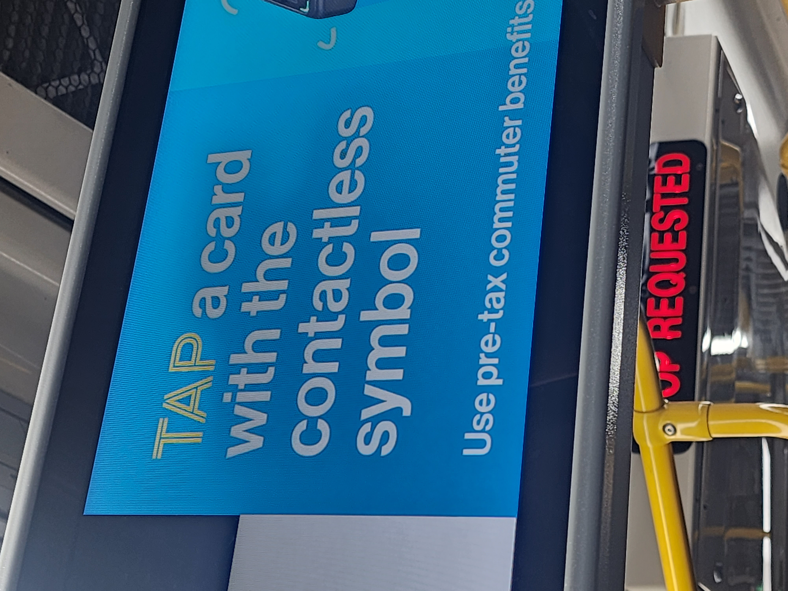

The TAP pay system that uses OMNY is my personal payment of choice. I
just always lose my metrocard. Unfortunately OMNY allows the MTA to
track my riding habits which leads me to questions about surveillance. I
debate whether to switch back to the metro card or not. Its a hard
choice.
